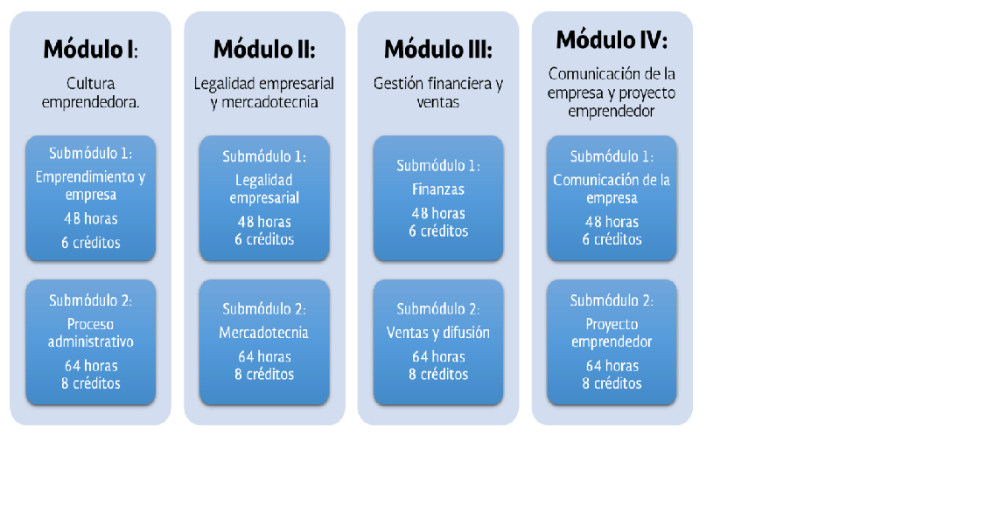
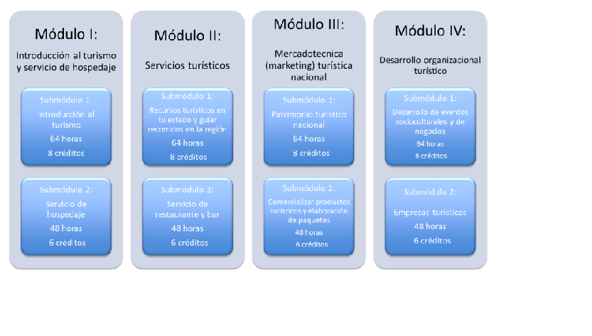

Capacitaciones en el plantel Cancún 2
Administración

La capacitación de Administración pertenece al campo diciplinar de las Ciencias Sociales. Permiten al alumnado representar la realidad de su entorno social, para transformarla mediante la apropiación de conocimientos, descubrimientos de significados, la generación de ideas y transmitirlas eficazmente.
Ubicación de la cpacitación. Aquí se muestran algunas de las materias con las que aprenderá el alumno
En la siguiente mapa de la capacitación encontrarás cuatro módulos los cuales cada uno está dividido por dos submódulos, en ellos verás el tema a ver junto con sus horas y su valor en créditos.
Contabilidad
La capacitación de Contabilidad se encuentra centrada en el campo diciplinar de Ciencias Sociales.
Favorece en el estudiantado un ánalisis crítico con visión emprendedora sobre los factores y aspectos fundamentales que intervienen en la productividad y competitividad de una organización y su relación con el entorno socioeconómico.
En la siguiente mapa de la capacitación encontrarás cuatro módulos los cuales cada uno está dividido por dos submódulos, en ellos verás el tema a ver junto con sus horas y su valor en créditos.
Comunicación

La capacitación de Comunicación pertenece al campo diciplinar de Comunicación y Humanidades.
Desarrolla conocimientos y habilidades para analizar, elaborar y diseñar mensajes utilizando la radio, y la televisión, los impresos, entre otros medios, partiendo de la base del proceso comunicativo para estrcuturar planes de promoción integrales.
En la siguiente mapa de la capacitación encontrarás cuatro módulos los cuales cada uno está dividido por dos submódulos, en ellos verás el tema a ver junto con sus horas y su valor en créditos.
Turismo
La capacitación de Servicios de Turismo en Inglés pertenece al campo diciplinar de las Ciencias Sociales.
Promueve el desarrollo de habilidades fundamentales del sector social-productivo, tales como: el liderazgo, la innovación, el autoaprendizaje, la comunicación asertiva rn distintos contextos, la integración afectiva de equipos de trabajp y la creatividad al brindar servicios de manera sustentable.
En la siguiente mapa de la capacitación encontrarás cuatro módulos los cuales cada uno está dividido por dos submódulos, en ellos verás el tema a ver junto con sus horas y su valor en créditos.
Tecnologias de la información y comunicación

La capacitación de Tecnologías de la Información y Comunicación pertenece al campo diciplinar de Comunicación.
Desarrolla en el estudiando las habilidades comunicativas, verbales y no verbales para expresarse a tráves de diversos códigos y herramientas de lenguaje a tráves de las diferentes tecnologías de la Información. Por otra parte, las Tenologías de la Información y Comunicación se vinculan de manera interciplinar tanto con el campo de Matemáticas como con el de Comunicación, ya que aportan los elementos para la resolución de problemas mediante los algoritmos y la programación.
En la siguiente mapa de la capacitación encontrarás cuatro módulos los cuales cada uno está dividido por dos submódulos, en ellos verás el tema a ver junto con sus horas y su valor en créditos.